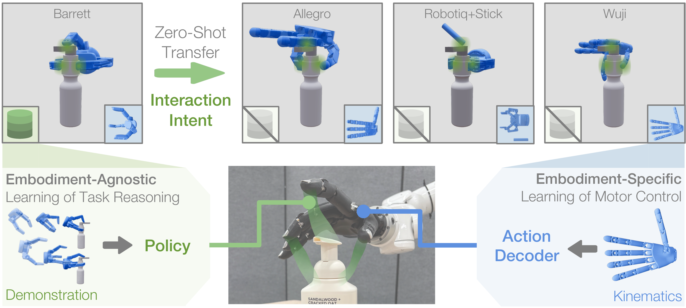
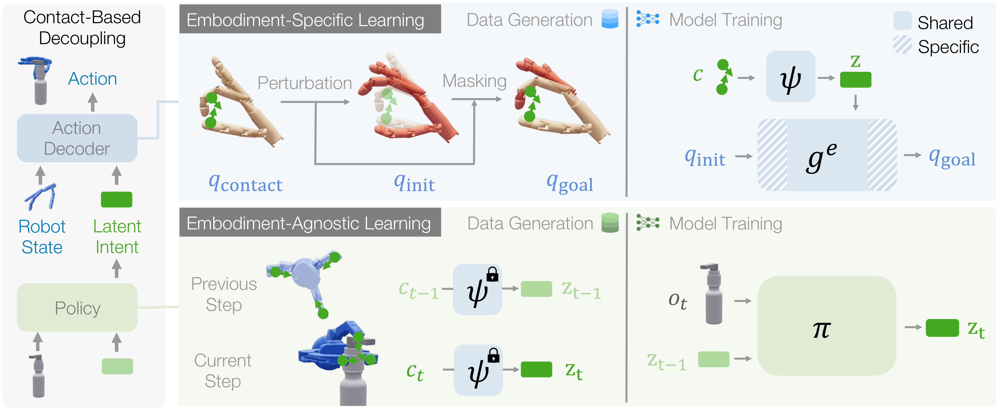
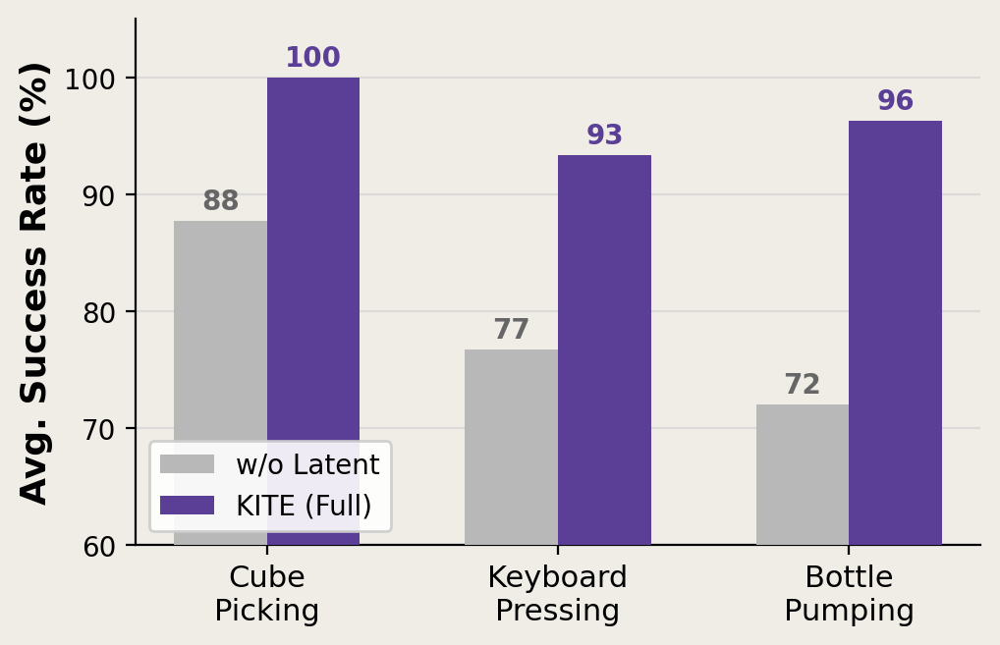
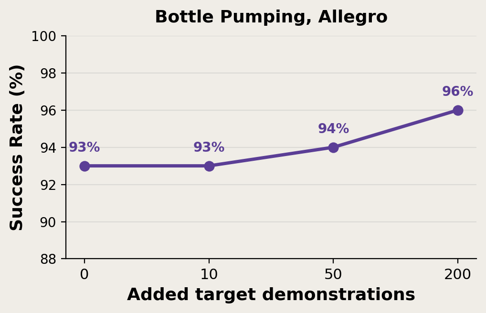

Cube Picking
Cube Picking: A Robotiq source demonstration transfers to three dexterous hands, testing simple-gripper to dexterous-hand zero-shot manipulation.

We consider the problem of zero-shot cross-embodiment transfer for dexterous manipulation, where task demonstrations are available only on a source embodiment. To address this, KITE decouples manipulation into embodiment-agnostic task reasoning (green) and embodiment-specific motor control (blue), connected by a learned latent representation of interaction intent. The former is implemented by a shared policy learned from source demonstration data, while the latter is implemented by an intent-conditioned action decoder learned from its kinematic model. KITE enables cross-embodiment transfer without needing to recollect demonstration data for each new robotic manipulator.
Generalizing manipulation policies across robot embodiments remains difficult because standard policies entangle task reasoning with embodiment-specific motor control. We study zero-shot cross-embodiment manipulation, where a policy trained on source embodiments must be deployed on a structurally different target embodiment without additional task demonstrations. We introduce Kinematic Interaction Transfer across Embodiments (KITE), which decouples manipulation into embodiment-agnostic task reasoning and embodiment-specific motor control, connected through a learned latent representation of interaction intent based on contact patterns. Task reasoning is performed by a shared policy that predicts latent intents from source demonstrations, while motor control is performed by an intent-conditioned action decoder learned from each embodiment's kinematic model. With KITE, adaptation to a new embodiment requires only training a new action decoder using its kinematic model, without recollecting demonstration data. We evaluate KITE on three manipulation tasks spanning transfer between parallel grippers, dexterous hands, and composite embodiments. KITE consistently achieves zero-shot transfer to structurally different target embodiments, outperforming state-of-the-art baselines in transfer success and task-embodiment scope.
KITE decouples task reasoning and motor control through the latent intent, an embodiment-agnostic contact-based action space:

With this design, KITE operates as a standard visuomotor policy at inference time, while deploying to a new embodiment requires only training a new action decoder from its URDF and plugging it in.
We evaluate zero-shot cross-embodiment transfer across three tasks and five embodiments in MuJoCo, including a parallel gripper, different dexterous hands, and a composite of two robots. With no task demonstrations on target embodiments, KITE achieves highest success rate across all transfer settings.
Cube Picking: A Robotiq source demonstration transfers to three dexterous hands, testing simple-gripper to dexterous-hand zero-shot manipulation.
Keyboard Pressing: Wuji demonstrations press a target key sequence and transfer to dexterous and composite target embodiments through the shared interaction-intent interface.
Bottle Pumping: The source policy transfers a multi-stage interaction that must both lift the bottle and depress the pump, requiring task-relevant contacts to change over time.
We deploy KITE on a Wuji hand mounted on a Tianji Marvin arm in the real world. All policies are trained in matched simulation and transferred to the hardware with no task demonstrations on the target embodiment. KITE succeeds in 7–8 out of 10 trials across all three tasks, confirming zero-shot transfer under real perception and physics. Keyboard pressing and bottle pumping further use a human hand as the source embodiment, showing that our method extends to human-to-robot transfer.
Cube Picking: Robotiq → Wuji reaches 7/10 successes on physical hardware.
Keyboard Pressing: Human Hand → Wuji reaches 8/10 successes on physical hardware.
Bottle Pumping: Human Hand → Wuji reaches 7/10 successes on physical hardware.
We verify the necessity of the latent intent interface, confirm that kinematics-only supervision is sufficient for the action decoder, and characterize the decoder's robustness to initialization perturbations.

Latent intent interface. Removing the latent intent and letting the policy output raw contact sets drops average success rate by 12–24 points across tasks, with the gap widening on more contact-rich tasks.

Kinematics-only supervision. Adding up to 200 target-task demonstrations to the action decoder hardly improves success rate, confirming that the kinematics-only supervision is sufficient.
| Initialization | Succ. (%) |
|---|---|
| Base | 100 |
| 5 cm, 30° | 100 |
| 20 cm, 60° | 81 |
| Flipped 180° | 62 |
| 30 cm shift | 37 |
Initialization robustness. The action decoder handles moderate perturbations well and only degrades when initialization departs far from the local contact neighborhood.
We gratefully acknowledge use of the research computing resources of the Empire AI Consortium, Inc., with support from Empire State Development of the State of New York, the Simons Foundation, and the Secunda Family Foundation. This work was supported in part by the Amazon Research Awards and an NVIDIA Academic Grant. We thank Samuel Jin, Yunhao Cao, Jialiang Zhang, Chuanruo Ning, Xingyi He, Adhitya Polavaram, Zhenyu Wei, Qi Wu, Cory Fan, and Pranav Thakkar for constructive discussions and feedback. We thank Calvin Qiu, Adhitya Polavaram, Yunhao Cao, and Cory Fan for their generous help on real-world and simulation robot infrastructure.